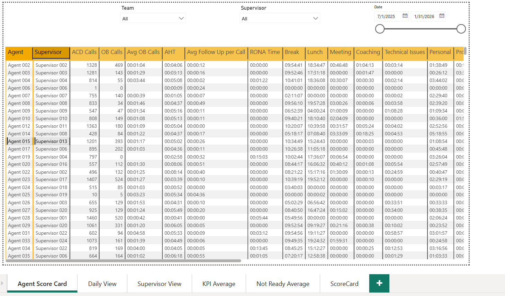
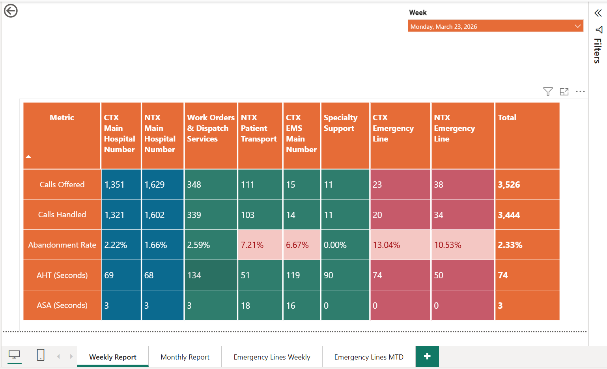
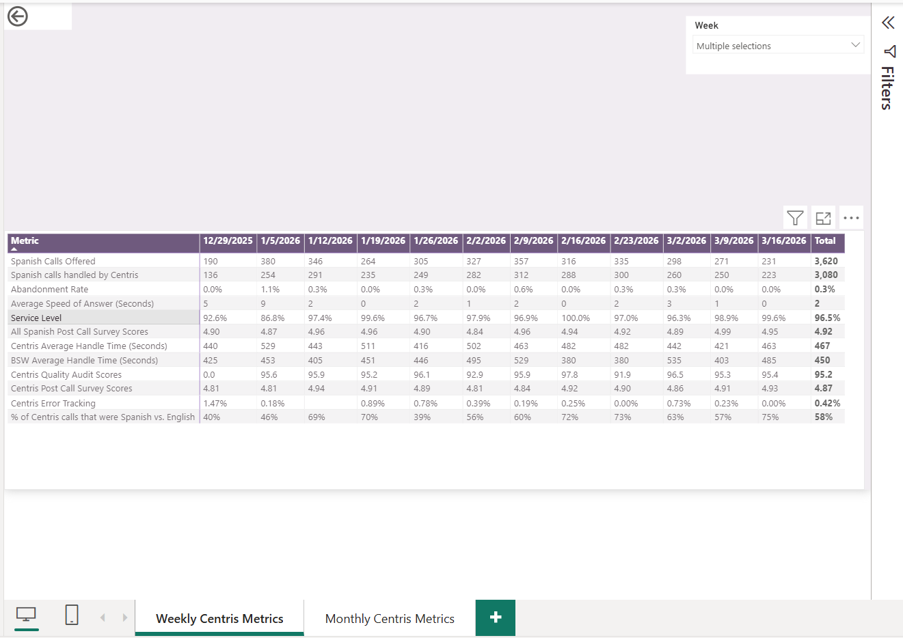

A collection of Power BI dashboards designed to monitor operational performance, analyze key performance indicators, and provide actionable views of agent, service-line, and support-team performance.
This Power BI reporting project brings together operational and performance metrics into interactive dashboard views. The reports provide both detailed and high-level perspectives, allowing performance to be evaluated at the agent, operational group, and support-team level.
The dashboards use KPI reporting, filtering, trend analysis, and conditional formatting to make large volumes of operational data easier to interpret and compare.
This dashboard provides a detailed view of agent-level performance. Interactive filters allow performance to be reviewed by team, supervisor, and date while metrics such as call activity, handle time, follow-up time, and operational status measures can be compared. Agent and supervisor identifiers have been anonymized for portfolio use.

This weekly operational view compares performance across multiple service areas. Key measures include calls offered, calls handled, abandonment rate, average handle time, and average speed of answer. Conditional formatting helps highlight performance differences and areas that may require additional review.

This dashboard focuses on weekly bilingual support performance and combines call-volume, service, quality, and customer-experience measures. Metrics include Spanish call volume, abandonment rate, average speed of answer, service level, average handle time, survey scores, quality audit scores, error tracking, and language mix.

Organized operational measures into focused dashboard views to make weekly and ongoing performance easier to monitor.
Used filters, matrix reporting, and conditional formatting to compare performance across agents, teams, service areas, and time.
Combined volume, efficiency, service, quality, and customer experience measures to identify changes and performance patterns.
Calls offered, calls handled, abandonment rate, service level, and average speed of answer.
Average handle time, outbound activity, follow-up activity, and other agent performance measures.
Quality audit scores, survey results, error tracking, and specialized language-support performance.
This project demonstrates my ability to translate operational data into structured Power BI reporting that supports performance monitoring and business analysis. It also demonstrates experience working with multiple levels of reporting—from detailed agent performance to broader operational KPI and specialized support-team views.
Explore more of my analytics work or connect with me through my professional profiles.